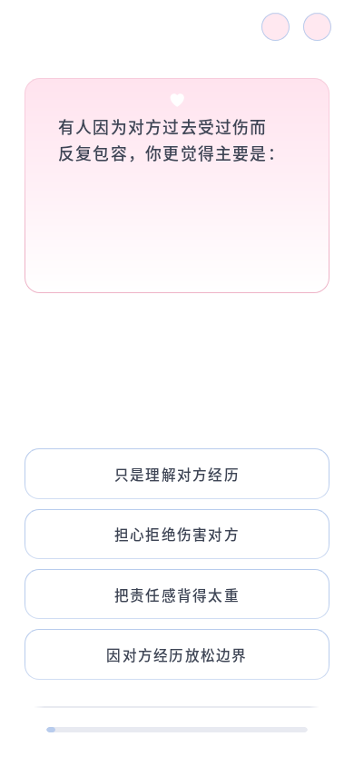

同题前后截图



2026-10-13 · 本地 Firefox · 前后固定 C10，所有尺寸为 CSS 像素。

960 组检查通过：题干左对齐与原文完整、长题和长选项无遮挡、题框与选项边缘一致、10.8px 选项间距、6.4px 进度条、17px 底部留白、整页滚动和重复 resize 稳定。下表为浏览器实际计算的字体值。
| 视口 | 题干字重 | 选项字重 | 选项字号 | 逐题检查 |
|---|---|---|---|---|
| 320 × 572 | 459 → 390.156 | 475.203 → 427.688 | 15.6406px → 16.4375px | 96/96 |
| 360 × 640 | 459 → 390.156 | 475.203 → 427.688 | 15.6406px → 16.4375px | 96/96 |
| 375 × 667 | 459 → 390.156 | 475.203 → 427.688 | 15.6406px → 16.4375px | 96/96 |
| 390 × 844 | 459 → 390.156 | 475.203 → 427.688 | 15.6406px → 16.4375px | 96/96 |
| 430 × 932 | 459 → 390.156 | 475.203 → 427.688 | 15.6406px → 16.4375px | 96/96 |
| 768 × 1024 | 459 → 390.156 | 475.203 → 427.688 | 14.6563px → 15.3906px | 96/96 |
| 1440 × 900 | 459 → 390.156 | 486 → 437.406 | 15.2969px → 16.0625px | 96/96 |
| 844 × 390 | 459 → 390.156 | 486 → 437.406 | 13.5px → 14.1719px | 96/96 |
| 899 × 900 | 459 → 390.156 | 475.203 → 427.688 | 15.7969px → 16.5938px | 96/96 |
| 900 × 899 | 459 → 390.156 | 486 → 437.406 | 16.75px → 17.5938px | 96/96 |
字体比例由共用 CSS 变量控制，浏览器会对字号与字重做细小取整。Firefox 中字号比例最大取整误差约 0.015px，已单独复核；没有按设备保存补偿值。
完整 28 题、上一题、返回未答题、刷新恢复、关于页往返及结果跳转通过；100%/200% 浏览器缩放在同一 CSS 视口下的位置和换行一致。200% 字号下的 C24 仍可完整阅读并滚动到进度条。本轮未实测其他浏览器或实体手机。
源码修改仅在 css/content.css 与项目说明；题库 Markdown、运行 JSON 和评分代码未改。没有改变答题 ID、存储或跳转接口。